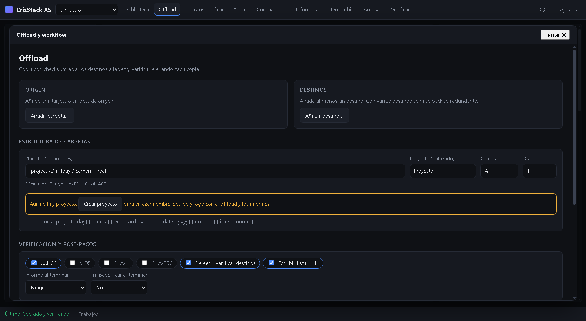
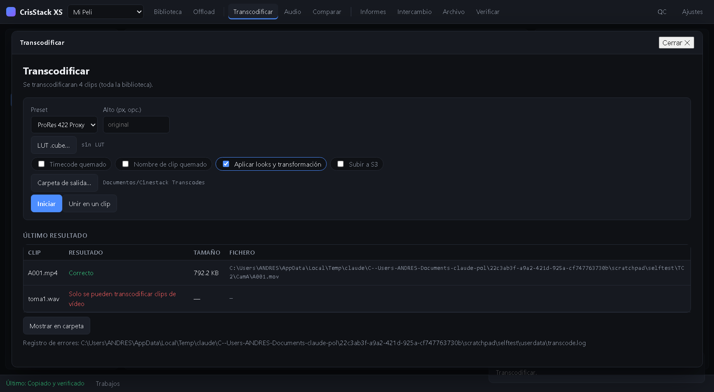

CrisStack XS es una herramienta de DIT / gestión de datos de rodaje: copia las tarjetas de cámara a varios destinos comprobando cada fichero con un checksum, ordena el material en una biblioteca con sus metadatos, permite revisarlo con el look aplicado, genera informes y prepara las copias de trabajo.
1. Primeros pasos: crear el proyecto
Todo cuelga de un proyecto. Su ficha se rellena una vez y se reutiliza en el offload, en la lista MHL y en la cabecera de los informes.
En la barra superior abre el selector de proyecto y elige ＋ Nuevo proyecto… (o pulsa Crear en el panel izquierdo de la biblioteca).
Rellena el nombre (obligatorio) y, si quieres, director, director de fotografía, ayudantes de cámara, DIT, data manager, sonido, script, productor, productora, localización y copyright.
Pulsa Elegir logo… para añadir el logo de la producción (PNG, JPG, SVG o WebP, máx. 1,5 MB). Saldrá en los informes junto al nombre de la productora.
Ficha del proyecto.
Puedes cambiarlo siempre: en la biblioteca, el panel de la izquierda muestra el proyecto con un botón Editar. Los cambios se reflejan al momento en el offload y en los informes nuevos.
2. Meter material: Offload o Importar
Offload (copiar una tarjeta)
Abre Offload en la barra superior.
Añade el origen (la tarjeta o carpeta) y uno o más destinos. Con varios destinos se hace backup redundante a la vez.
El proyecto sale enlazado automáticamente. Indica cámara y día de rodaje.
Elige la estructura de carpetas con comodines, por ejemplo {project}/Dia_{day}/{camera}_{reel}. El ejemplo debajo te muestra cómo quedará.
Marca los hashes (XXH64 recomendado), «Releer y verificar destinos» y «Escribir lista MHL». Opcionalmente un informe y una transcodificación al terminar.
Pulsa Iniciar offload. Cada fichero se lee una vez, se escribe en todos los destinos y después se vuelve a leer cada copia para compararla con el original.

Offload: el proyecto activo aparece enlazado, con su equipo.
Importar (material que ya tienes en disco)
En la biblioteca pulsa Importar carpetas… (o Ficheros…). No copia nada: registra los ficheros en la biblioteca conservando la estructura de carpetas original. Si importas dos veces la misma carpeta, no se duplican los clips.
3. La biblioteca
Árbol de carpetas
A la izquierda ves todo el material como un árbol de carpetas (proyecto → día → cámara → tarjeta…). Haz clic en una carpeta para ver sus clips, incluidos los de las subcarpetas. La flecha ▾ plega y despliega.
Tres vistas
Vista
Para qué sirve
Lista
Tabla con todas las columnas de metadatos. Se ordena haciendo clic en la cabecera.
Miniaturas
Cuadrícula de miniaturas para revisar rápido. Doble clic para reproducir.
Carpetas
Resumen por carpeta: cuántos clips tiene, tamaño total, y cuántos son vídeo, audio o imágenes, más la duración. Clic en una tarjeta para entrar.
Vista lista con árbol de carpetas, flags, valoración y vista previa.Vista de carpetas: clips, tamaño y tipos de cada una.
Columnas de la lista
Pulsa Columnas… para elegir cuáles ver. Disponibles: flag (marca, incluido circled), rating, preview, nombre, duración, frames, cámara, ISO, WB, shutter, shutter angle, sensor FPS, filtro ND, FPS del proyecto, modelo de lente, códec, tipo de fichero, resolución, fecha de registro, formato de TC, TC inicio, TC final, ShotID, reel/tape, fecha de grabación, fabricante, pistas de audio, tamaño, información de look, Camera T, ISO nativo, espacio de color RAW, códec de audio, volúmenes, backups, escena, plano, toma y notas.
Editar una celda: doble clic en una celda subrayada al pasar el ratón, escribe y pulsa Enter. Los datos de cámara (ISO, WB, shutter, lente…) se rellenan solos cuando el fichero los trae; si no, los escribes tú.
Añadir más celdas: en Columnas… escribe el nombre de una columna nueva y pulsa Añadir columna. Se puede editar en la lista y viaja con la exportación.
Exportar metadatos: el botón CSV exporta las columnas que tengas visibles (de los clips seleccionados, o de todos). La exportación Avid ALE incluye también ISO, WB, shutter, lente y tus columnas propias.
Los datos «Backups» y «Volúmenes» se rellenan en los clips que entran por Offload (cuántas copias verificadas hay y de qué tarjeta vienen). En los importados, Backups es 0.
4. Revisar: reproducción, color y QC
Doble clic en un clip para reproducirlo en el panel derecho. Debajo del reproductor tienes:
Color falso, Zebra, Clipping y Peaking para exposición y foco.
Líneas de encuadre (2.39, 2:1, 1.85, 16:9, 4:3, 1:1, 9:16) y Scopes (waveform, histograma, vectorscopio).
Fotograma guarda un still con el look aplicado; Miniatura usa el fotograma actual como miniatura del clip.
En la sección Color y transformación del inspector ajustas CDL (slope, offset, power, saturación), cargas una LUT .cube, copias y pegas looks entre clips y los guardas en la biblioteca. También desqueeze, espejo, rotación y recorte. El botón QC de la barra superior da más espacio al reproductor.
Reproductor con color falso, scopes y líneas de encuadre.
5. Transcodificar
Selecciona uno o varios clips en la biblioteca y abre Transcodificar (si no seleccionas ninguno, se usan todos los de vídeo).
Elige el preset (ProRes, DNxHR, H.264, H.265), la altura opcional, LUT, timecode o nombre quemados, y si se aplican los looks de cada clip.
Pulsa Iniciar. El progreso se ve en la barra inferior.
El resultado se registra automáticamente en la carpeta Transcodes de la biblioteca, con su información y tamaño reales. Al terminar, la pantalla muestra una tabla por clip: Correcto con el tamaño y la ruta, o el motivo exacto del error. Un fichero solo se da por bueno si ffmpeg termina y tiene contenido; nunca queda un clip vacío. Los errores se guardan además en transcode.log.

Transcodificación con tabla de resultados.
6. Informes e intercambio
Informes (PDF o HTML): día de rodaje, clips, miniaturas, contact print y volumen/checksums. La cabecera lleva el logo, la productora, el equipo y, al pie, el copyright del proyecto.
Intercambio: exporta a Avid ALE, Premiere/FCP7 XML, FCPXML (Final Cut Pro X y Resolve), CDL (.ccc), EDL y CSV; e importa hojas de rodaje en CSV o ALE emparejando por nombre, timecode o escena/plano/toma.
Archivo: sellado ASC MHL con historial, relink de ficheros movidos, detección de secuencias de imagen y subida a S3.
Verificar: comprueba una carpeta ya copiada contra su lista MHL.
7. Atajos de teclado
Tecla
Acción
GBH0
Marcar bueno, malo, pendiente o quitar marca (en la selección)
1–5
Valoración de 1 a 5 estrellas
↑↓
Clip anterior / siguiente
K / Espacio
Reproducir / pausa
JL
Retroceder 5 s / avance rápido
←→
Un fotograma atrás / adelante
Esc
Cerrar la ventana abierta y volver a la biblioteca
Los atajos de la biblioteca se pueden cambiar en Ajustes → Atajos de teclado.
8. Si algo no va bien
Síntoma
Qué hacer
macOS dice que la app «está dañada» o no deja abrirla
Clic derecho → Abrir. Si persiste, en Terminal: xattr -cr "/Applications/CrisStack XS.app" (la app no está firmada con certificado de Apple).
Un clip no se transcodifica
Mira la tabla de «Último resultado» en Transcodificar: indica el motivo (fichero original no encontrado, no es vídeo, error de ffmpeg…). Si falta el original, usa Archivo → Relink.
ISO, WB o lente salen vacíos
Esos datos solo aparecen si el fichero los incluye. Escríbelos a mano en la lista (doble clic).
Un offload termina con fallos de verificación
Revisa la pestaña Trabajos y repite la copia del fichero afectado: el fallo indica que la copia no coincide con el original.
Limitaciones conocidas: sin salida SDI ni LTFS; las subidas a Frame.io, Sony Ci, Webgate y COPRA no están disponibles; los datos de cámara se leen de los metadatos que ffprobe encuentra y no de los formatos RAW propietarios.